To get started, head to scratch and create and account by clicking Join Scratch in the top right. Once you have an account, click create in the top left to start a new project. Once your project is created, your page should look something like this (it might be completely different if the site has updated, but the general idea should be the same): 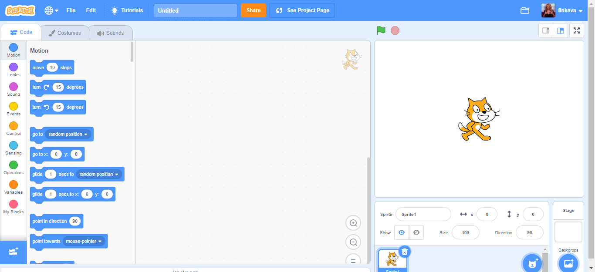
Now that you're in a new scratch project, you need to familiarize yourself with what the different parts of a project are.
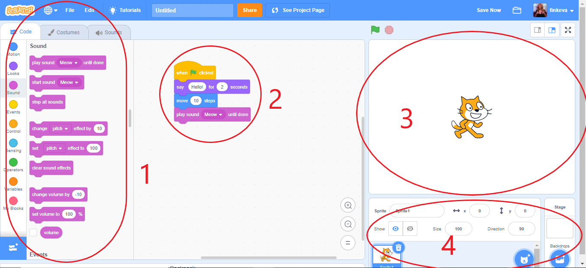
In this image, different areas are circled. These areas are:
Area 1 - This area is where you access the different blocks that will be used to build your project. It is also where you can edit sprite (character) costumes and sounds.
Area 2 - This area is where you actually build your code with the blocks provided in area 1.
Area 3 - This area is the display/output area that responds to your code. The cat currently in the display is the default sprite that comes with a new project.
Area 4 - This area is where you add, select, or remove sprites and backgrounds. To add a sprite, click the blue button with a cat and +. To add a background, click the blue button with the picture and +.
The code you add is added only under the current sprite (the sprite with the blue borders). To change the sprite, click the other sprite in area 4.
Events are blocks of code that run code attached to them when a specific event is triggered. They can be found on the left under the events tab. The most common one is the 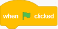 block. This block triggers any blocks attached to it when the green flag above the output is clicked. Other common events are 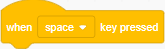 and 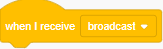. For now, drag a into your code area.
Now, go to the motion tab. It's the first tab on the left. Here, you can find blocks that change the location of your sprite.
Drag the first block in the motion tab, 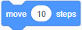, into your code and
attach it to the block. Now, when you click the green flag above the output area,
the cat should move to the right! Change the 10 to a -10, and the cat will move left. Changing the number from 10 to 100 will increase the distance the cat moves.
Drag the block to the left side of the screen with the rest of the blocks to remove it. Another way to delete it is to hover over it and click the delete key.
Now, drag a 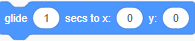 into your code and attach it. Change the x and the y to something else, like x: 112 y:56.
When you click the green flag, the cat should glide to the spot in 1 second. Move your cat clicking on him and dragging him to a different spot.
Change the amount of time from 1 second to 4 seconds and run your program again. This time, the cat should move to the spot slower.
Finally, remove the glide block and drag in a 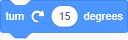 block,
a 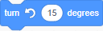 block, or a 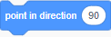 block and attach it.
If you drag in a , change it from 90 to something else, like -90. Now, run the code, and the cat should rotate and face a different way.
If you move him by removing the turn block and dragging in a , the cat will move in the direction he's facing, not right or left.
Next, go to the looks tab. This is where you find blocks that make your sprite say things and alter the way it looks. Remove any blocks attached to your event,
and drag in 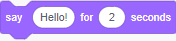 or 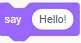 The difference is the first on will only say the message for the duration, while the second one says the message until it says something else.
For now, you can use either. When you run the program, a chat bubble will appear above the cat's head containing the message ("Hello!" by default).
On the left side of the screen towards the top, there are three tabs: code, costumes, and sounds. Navigate to the costumes tab.
Under this tab, you can add costumes to your sprite and change/delete existing ones. Notice the cat has two costumes, with the current costume being costume1.
Click costume2, and the cat will change costumes. Change back to costume1. Go back to the code tab and add
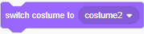 to your code. Running the code will switch the cat's costume.
Head over to the sensing tab. Here, the blocks we care about are the 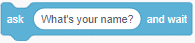 and
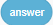 blocks. There are also blocks that allow you to detect if the sprite is touching the mouse or a certain color,
but you won't use those often if at all. What the ask block does is put the text inside in a speech bubble above the sprite and give a space for the user
to input something. The users input is then stored inside . For example, you could ask the user for the name and then
say their name.
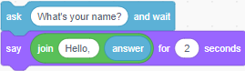
Navigate to the control tab on the left. This category of blocks control the flow of your program.
The first block, 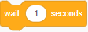, pauses the line of blocks it's in for the specified amount of time.
The next three blocks are loops. Loops repeat blocks contained in them multiple times.
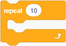 This block repeats the code a specified number of times (10 by default).
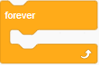 This block repeats the code until the code is stopped by clicking the red octagon.
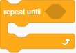 This block repeats the code until the specified condition is met. For example, you might have a repeat until (x > 100) loop and the code inside moves 10 steps. The sprite will repeatedly move 10 steps until their x position is greater than 100.
The next 2 blocks are decision makers.
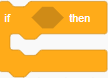This block runs the blocks inside of it only if the condition specified is true. Conditions can be found under the operators tab.
Operators include , , and .
You can use multiple operators at once by putting them in a or an . You can do the opposite of a condition
by putting it in a 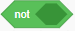. Lastly, the block finds the remainder of a number. 4 mod 3 = 1. For an example of these, if I want to test if the sprites x position (found at the bottom of the motion tab) is greater than 0 and not equal to 12, I would combine all of these to get
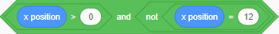.
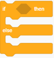 This block is very similar to the if block, except if the condition is false, the code inside the else portion will run.
Using what you've learned so far, try to make a program. For an idea, you could make a program where two characters have a conversation. If you don't like that idea, try to make a quiz show where the user gets asked questions and is told whether they are right or wrong. Come back when you're done to learn more!
Now that you've finished that, head over to the variables tab. Variables are named items that hold information. For example, I might have a variable named num that stores a number, a variable called name that stores someone's name, or a variable called temp that stores the temperature. To make a variable, click the "Make a Variable" button at the top of the variables tab. To change the value of a variable, use 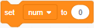. If want to change a variable that is a number by a certain amount, you can use 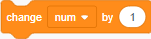. This will add the number that you do to the variable. For example, if your variable is 5, and you change it by -2, your variable is now 3.
Let's think back to the name variable example. What if you want to store multiple names? Well, you could make multiple variables like name1, name2, name3, etc. However, this makes the code very clunky and confusing. Instead, we can make a list called names that lists all the names. Lists can be found under the variables tab. Click the "Make a List" button to make one. To add an item to the list, use 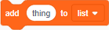. To delete something from the list, use 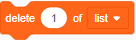. This delte command uses the index of the item you want to delete, which is basically just the spot of the item. For example, in list called names with items "Sarah," "Tasha," and "Brad," item "Sarah" is at index 1, item "Tasha" is at index 2, and "Brad" is at index 3. If I delete the item at index 2, names is now "Sarah" at index 1 and "Brad at index 2. To delete all of the items in a list, use 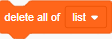. If you want to add an item to your list, but you want to add it in the middle, you can use 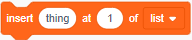. Going back to the names list, if I insert "Josh" at index 1, the list is now "Josh," "Sarah," and "Brad." To replace an item, use 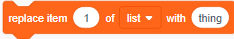 Replacing item 2 of names with "Wanda" will make the list "Josh," "Wanda," and "Brad." To access an item from a list, use . Item 3 of names would return "Brad." Finally, to get the length of a list, use 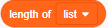. The length of names is 3.
You've finished this tutorial! However, you don't know everything there is to know about Scratch since I only talked about the main blocks. Play around with things and look through all the tabs to learn more. If you ever need to do something, there's probably a block for it. Most blocks are also pretty self explanatory, but you can always just google what one does. Good luck making things in Scratch!